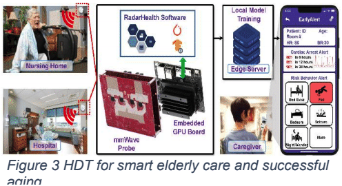

This initiative aims to address the unmet needs of noninvasive continuous monitoring and early warning of cardiac failures, dementia, and risky behaviors for elderly individuals in long-term care facilities and senior living homes. It promotes the concept of "hospital at home" by introducing hospital-grade patient monitoring to care settings beyond the hospital walls.
